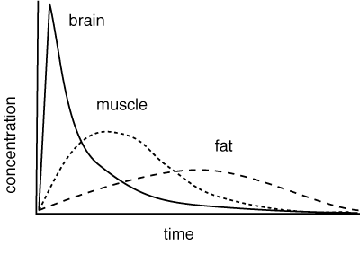

Most drugs, apart from those appplied to the site of action, are distributed around the body by the blood, in many cases bound to plasma proteins. Tissues with high blood flow, such as the brain, will have more drug distributed to them initially than tissues with low blood flow such as fat. Drugs still have to cross membranes to get to the target tissue in a similar process as in absorption; the blood brain barrier keeps most drugs out.
Disease can alter this, eg in heart disease, the blood flow to all tissues is reduced; inflammation usually increases the bood flow to the affected tissue.
Drugs are not usually evenly distributed throughout the body; they are usually concentrated in theoretical compartments. Some idea of where the drug goes can be obtained from the volume of distribution.
Distribution to different tissues depends on blood flow, among other things.
Blood brain barrier
Protein binding
Compartments
Volume of distribution